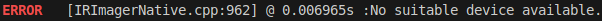
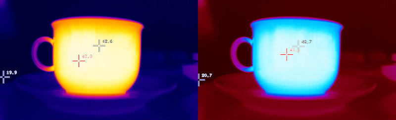
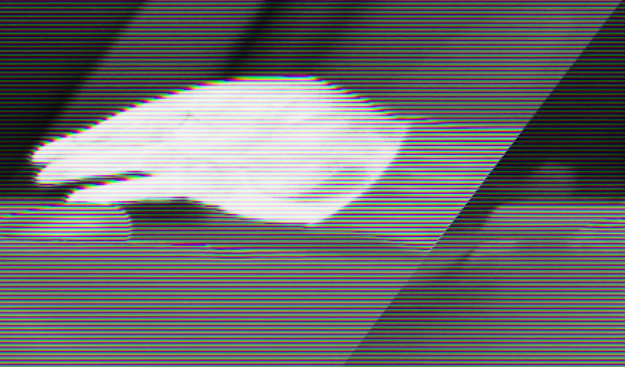
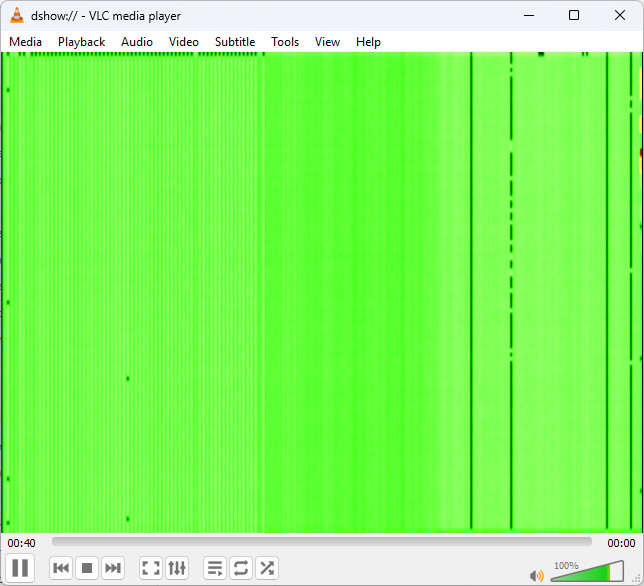
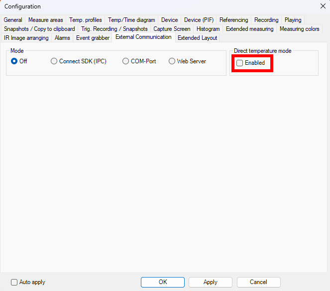

|
Thermal Camera SDK 11.4.9
SDK for Optris Thermal Cameras
|
|
Thermal Camera SDK 11.4.9
SDK for Optris Thermal Cameras
|
Emissivity, distortion, flags? You are talking in an incomprehensible technical jargon? Can help me out here?
Yes, Optris can. We assembled a comprehensive Lexicon explaining many terms in regards to thermal imaging and measuring temperatures.
My SDK application can not access the data stream from the device.
Check, if you as a user are part of the video group:
If this is not the case, add yourself to this group:
rpi-eeprom-update.On some host systems, cameras with higher resolutions or high frame rates (e.g., PI/Xi 640) may experience compatibility issues between the USB controller and the camera firmware. The UVC kernel driver provides settings that allow users to establish a connection despite these complications. The nodrop option and some of the so-called quirks have proven to be the most useful. How to configure these is explained in the following section.
To get started, unload the uvcvideo module. You need to close every application that uses a camera (webcam as well) and you might need to unplug the camera. Then run this command:
Now you can reload it with the desired settings. We recommend that you try one or more of the following options:
nodrop = 1: Some hardware might have trouble receiving all isochronous packets of a frame. This setting ensures that all frames, even if some are not fully received, reach user-space and thus the applications.quirk = 2: Sometimes, due to timing mismatches, the probe commands of the UVC driver don't get answered correctly by the camera. This option skips these probe commands.quirk = 100: Goes a step further by skipping both probe and commit commands, which can help in cases where the camera firmware is particularly unresponsive to UVC protocol negotiations.More detailed information on the quirks as well as additional available options can be found here.
For debugging purposes you can activate the kernel logs for the uvcvideo module with the trace=0xffff setting. However, make sure to disable this option before creating your log-file (trace=0x0) so as not to spam your kernel logs.
The following example shows how to load uvcvideo with some activated options:
Since the kernel log messages of the UVC module are quite numerous, we recommend you write them directly to a file:
All these changes disappear if you restart your system. To make them permanent, write them to the configuration file of the uvcvideo module:
When I start my SDK application I get the following error message although my device is plugged into the USB port:

It does not even show up when I use the tool otc_find_devices.
You can run into this situation when you are using a Xi 80, a Xi 320 MT, a Xi 410 or a Xi 1M via USB on Linux. It happens when a SDK application is shutdown abruptly, for example, with Ctrl + C or by killing it in a task manager. This prevents the SDK from properly releasing its resources. As a result, the SDK application can not return control over the device back to the kernel. When searching for USB cameras after the restart of the application the camera does not appear because the kernel still thinks it used by another process.
The only way to remedy this issue is to plug the device out and in again. You can avoid this problem by ensuring that the SDK can shutdown gracefully. This can be achieved by either calling IRImager::disconnect() or by making sure that your IRImager object is destroyed before the application exits.
I have trouble getting a video stream from my PI 640(i) on Linux.
Due to a fix in the Linux kernel all received frames can be discarded when a certain event occurs. For more details please refer to
This affects at least Linux kernels 6.11 - 6.12.22 and devices using isochronous data transfer. This includes all Optris cameras with the exception of Xi 80s, Xi 320 MTs, Xi 410s and Xi 1Ms.
The SDK example applications do not start.
In such a case try installing the C++ redistributable v14 for the amd64/X64 architecture from Microsoft. If you install Visual Studio 2022 with the Workload Desktop development with C++ (s. Start Developing - C++), the required C++ redistributable will be installed automatically.
The false color image does not seem to use the ColoringPalette that I specified.
Check, whether you specified the correct ColorFormat when instantiating the ImageBuilder. Refer to the API documentation of the ColorFormat enum for more details.

The false color image I generated exhibits tearing and lines.
Check, whether you specified the correct WidthAlignment when creating the ImageBuilder. Refer to the API documentation of the WidthAlignment enum for more details.

When I connect my thermal camera to my computer via USB it appeared as a video capture device. When I tried to open it with a program like VLC media player I only got green noise like this:

Nothing is wrong. The player just visualizes the raw data. Its needs processing by the SDK in order to become usable.
Wait a minute I did not even get that far. The device shows up as a capture device but I can not open it.
This happens with Xi 80s, Xi 320 MTs, Xi410s and Xi 1Ms on Linux. The reason for this is the USB transfer mode used by these devices. For more detailed information please refer to the Streaming section in the Device Communication chapter.
I am still puzzled: The frames in the VLC player are larger than the ones returned by the SDK. Where did they disappear?
These additional rows or columns contain the metadata of the frame. They are decoded by the SDK and provided separately in form of a FrameMetadata object in thermal frame callbacks.
I've connected my Xi camera, started the provided Simple View example and everything works fine. However, there is a noticeable difference of the temperature values to the values displayed in the PixConnect.
Most Xi cameras (Xi80, Xi410, Xi1M, ...) support an autonomous mode where the camera itself calculates the temperature, even if its not connected to a PC. This is called "Direct temperature mode". Currently (Version 10.1.0) this mode is not supported or recognized by the SDK. As a result, the calculations to convert the energy values into temperatures will be done twice which leads to faulty results.
To disable this mode or check its state, start the PixConnect on Windows and open the configuration panel. Switch to the "External Communication" tab and make sure that the checkbox at "Direct temperature mode" is NOT checked.
